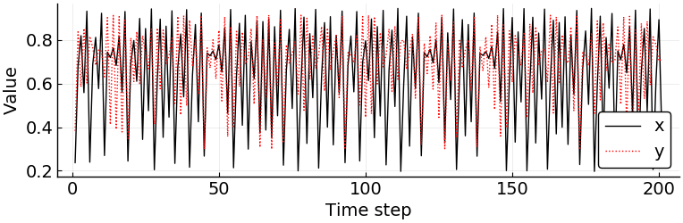
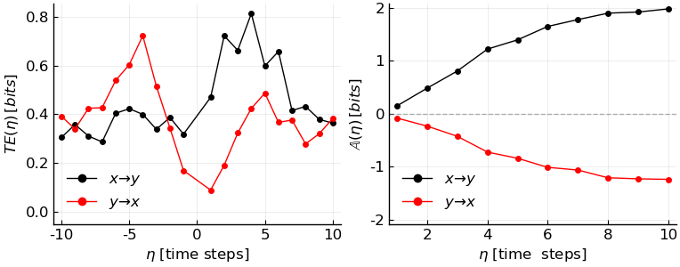

PredictiveAsymmetryTest
#
CausalityTools.CausalityTests.PredictiveAsymmetryTest — Type.
PredictiveAsymmetryTest(predictive_test::CausalityTest)
The parameters for a predictive asymmetry causality test [1]. For a normalised version, see NormalisedPredictiveAsymmetryTest.
Mandatory keywords
predictive_test: An instance of a predictive causality test that explicitly uses prediction lags (e.g.VisitationFrequencyTestorTransferOperatorGridTest).
About the prediction lags
The prediction lags in the predictive causality test must consist of n negative integers and n positive integers that are symmetric around zero.
In other words, negative lags must exactly match the positive lags but with opposite sign. The zero lag can be included, but will be ignored, so it is possible to give ranges too.
Examples
bin = RectangularBinning(5) # divide each axis into 5 equal-length intervals
ηs = [-10:-1; 1:10] # exclude the zero lag (it is irrelevant for the asymmetry)
test_visitfreq = VisitationFrequencyTest(ηs = ηs)
test_transferoperator = TransferOperatorGridTest(ηs = ηs)
# Note that `predictive_test` is a *mandatory* keyword.
PredictiveAsymmetryTest(predictive_test = test_visitfreq)
PredictiveAsymmetryTest(predictive_test = test_transferoperator)
References
- Diego, David, Kristian Agasøster Haaga, Jo Brendryen, and Bjarte Hannisdal. A simple test for causal asymmetry in complex systems. In prep.
Example
First, let's load the necessary packages.
using CausalityTools, DynamicalSystems, Plots, Statistics, LaTeXStrings
# Use the pyplot backend, so we can use LaTeX formatted strings. To do this,
# you need the PyPlotinstalled
pyplot()
Plots.PyPlotBackend()
Time series
Our example time series will be generated from a system of unidirectionally coupled logistic maps, logistic2_unidir. This system consists of two variables x and y, where x influences y unidirectionally.
Let's generate time series consisting of 300 observations. We'll let the coupling strength from x to y be moderate (c_xy = 0.5).
npts = 200
sys = CausalityTools.Systems.logistic2_unidir(c_xy = 0.5)
x, y = columns(trajectory(sys, npts, Ttr = 500)) # discard first 500 points
plot(xlabel = "Time step", ylabel = "Value", size = (382*2, 250),
tickfont = font(14), guidefont = font(14), legendfont = font(14))
plot!(x, label = "x", c = :black)
plot!(y, label = "y", c = :red, ls = :dot)

Computing predictive asymmetry
Let's compute the predictive asymmetry using the VisitationFrequency transfer entropy estimator with logarithm to base 2, which gives us the transfer entropy in units of bits. We'll prediction lags [-10:-1, 1:10], excluding the zero lag because it doesn't contribute to the predictive asymmetry. The partition of the state space reconstruction of our input time series will be constructed by dividing each coordinate axis of the reconstruction into 5 equal-length intervals (i.e. a rectangular discretization).
# Prediction lags (symmetric around zero)
η_max = 10
ηs = [-η_max:-1; 1:η_max]
# Transfer entropy test
est = VisitationFrequency(b = 2) # logarithm to base 2
bin = RectangularBinning(5)
test = VisitationFrequencyTest(ηs = ηs, estimator = est, binning = bin)
# Predictive asymmetry test based on transfer entropy
pa_test = PredictiveAsymmetryTest(test)
PredictiveAsymmetryTest{VisitationFrequencyTest{20},10}(predictive_test = VisitationFrequencyTest{20}(k = 1, l = 1, m = 1, n = 1, τ = 1, estimator = VisitationFrequency(2), binning_summary_statistic = mean, binning = RectangularBinning(5), ηs = [-10, -9, -8, -7, -6, -5, -4, -3, -2, -1, 1, 2, 3, 4, 5, 6, 7, 8, 9, 10]))
In both directions (x to y, and y to x) we will compute both transfer entropies and the corresponding predictive asymmetries across prediction lags, so that we illustrate the advantage of the predictive asymmetry method compared to the raw transfer entropy.
# Compute transfer entropies
tes_xy = causality(x, y, test)
tes_yx = causality(y, x, test)
# Compute predictive asymmetries
pas_xy = causality(x, y, pa_test)
pas_yx = causality(y, x, pa_test)
[pas_xy pas_yx]
10×2 Array{Float64,2}:
0.150561 -0.0802601
0.48534 -0.23295
0.808924 -0.425156
1.22224 -0.723563
1.3977 -0.840063
1.65109 -1.01169
1.78001 -1.06237
1.90136 -1.20857
1.923 -1.2286
1.98186 -1.23807
As expected, the predictive asymmetries in the causal direction (x to y) are positive and increasing, while they are negative and decreasing in the non-causal direction. This characteristic predictive asymmetry is a hallmark of unidirectional causality.
To illustrate this, we'll plot transfer entropies and predictive asymmetries next to each other.
ymax = maximum([tes_xy; tes_yx])
p_te = plot(xlabel = L"$\eta$ [time steps]", ylabel = L"TE (\eta)\,[bits]",
fg_legend = :transparent, bg_legend = :transparent, legend = :bottomleft,
ylims = (-0.05, ymax*1.05))
plot!(ηs, tes_xy, marker = stroke(:black), c = :black, label = L"x \to y")
plot!(ηs, tes_yx, marker = stroke(:red), c = :red, label = L"y \to x")
ymax = maximum([pas_xy; pas_yx])*1.05
p_pa = plot(xlabel = L"$\eta$ [time steps]", ylabel = L"\mathbb{A} (\eta)\,[bits]",
fg_legend = :transparent, bg_legend = :transparent, legend = :bottomleft,
ylims = (-ymax, ymax))
plot!(ηs[ηs .> 0], pas_xy, marker = stroke(:black), c = :black, label = L"x \to y")
plot!(ηs[ηs .> 0], pas_yx, marker = stroke(:red), c = :red, label = L"y \to x")
hline!([0], ls = :dash, α = 0.6, label = "", c = :grey)
pcomb = plot(p_te, p_pa, layout = (1, 2), size = (382*2, 300),
tickfont = font(12), guidefont = font(12), legendfont = font(12))

Interpretation
This example perfectly illustrates why transfer entropy (TE) results alone cannot be trusted to indicate the correct directionality. Transfer entropy is nonzero both in the causal and in the non-causal direction, and the magnitudes are really not that different. A misinformed analyst could interpret this result as a bidirectional causal interaction.
In order to deduce the correct directionality, we would need TE_{x \to y} > TE_{y \to x} consistently across prediction lags. but this is not necessarily the case in practice. Moreover, the best information we could get out of that is that there is top-down influence from x to y. To rule out an influence in the non-causal direction, we would need to use surrogate testing to reject that TE_{y \to x} > 0 is significant, and to accept that TE_{x \to y} > 0 is significant. However, often significance testing using surrogates is not enough – one might still get incorrect causalityies.
The predictive asymmetry resolves this conondrum. In short, the predictive asymmetry is always positive (and increasing for increasing prediction lags) in the causal direction, and negative (and decreasing for increasing prediction lags) in the non-causal direction. Hence, our results corretly indicate unidirectional causality from x to y. Moreover, one can also show that it is directly related to the flow of the underlying system.
For more information on about this method, wait patiently for our upcoming paper, which should be out as a preprint soon. Keep tuned for more!